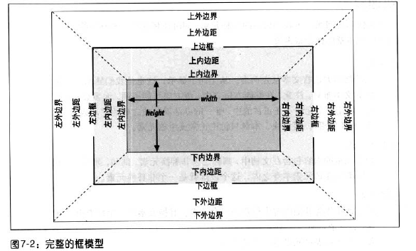

我们可以看一下，完整的框模型：

盒子模型中的width影响的是内容区的宽度，而不是整个可见的元素框的宽度。
<p
style="width:200px;padding:10px;margin:20px;">widness</p>
上述段落p的宽度=200+2*10+2*20=260px
正常流中块级元素框的水平部分的总和就等于父元素的宽度width。
水平格式化的7个属性：margin-left,border-left,padding-left,width,padding-right,border-right,margin-right